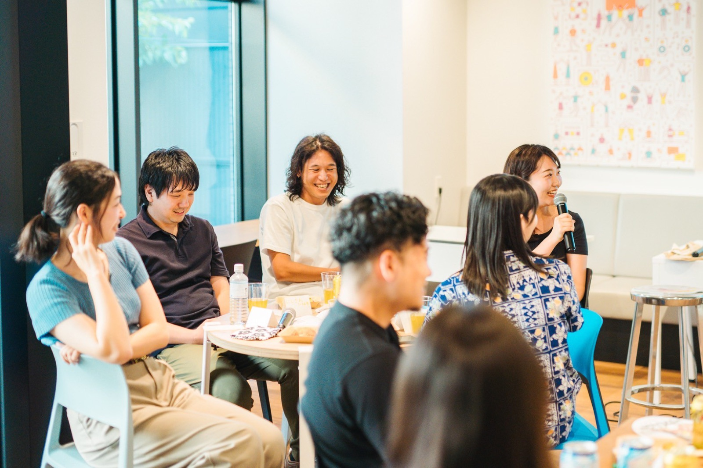

同じ温度で話せる相手がいなかった話を、自分のことばにしていく90分。
誰かの正解をなぞりに来る場所ではありません。自分のなかから湧いてくる手がかりを、ゆっくり言葉にしていきます。
がむしゃらに走ってきた、ここまでの数年間。少しずつ仕事もこなせるようになって、自分にできることの輪郭が見えてきた。
ただ、このまま走り続けた先に自分は何を見たいんだっけ、と思う日がある。働くって、生きるって、自分にとってどういうことだろう。そういう問いが、ふと湧いてくることがあります。
この90分は、ワークと対話を通して、20代後半のあなたが働く意義・生きる意味を自分のことばで見つけにいく場として設計しました。年収や肩書とは別の軸で、自分が大事にしたい価値観を見つめてみる時間です。
進め方はシンプルです。13問のワークシートに、自分のペースで書く。書いたことを3〜4人組で話す。また書く。90分のあいだ、これをくり返します。人に話すために言葉を探しはじめると、ひとりで書いているだけでは出てこなかったものが出てきます。
90分で答えが出るとは思っていません。走ってきたぶん、いちど立ち止まって自分はどう生きたいかに触れて帰ってもらえたら、それでいいと思っています。

ワークと対話を交互に。ひとりで書く時間と、グループで話す時間を行き来します。
進め方の説明と、名前といまの状況をひとことずつ。肩書きの紹介はなしにしています。
3〜4人組で、いま考えていることをそのまま話す。そのあと、問いに沿ってひとりで書き出す時間を取ります。
書いたことをグループで共有します。「じゃあ、自分はどうしたいか」を、無理のない範囲で。
明日からやってみたいことを、ひとりずつ。振り返りをして、21時30分に終わります。
ふだんの会話の癖を、いったん脇に置きます。アドバイスもまとめも出てこない90分なので、ふだんは出てこなかったことばが出てきます。
申し込みのときに書いてくださったことばを、手を入れずにそのまま引いています。
「「これがやりたい」で選んできたはずなのに、ありたい自分とズレていく。どこへ進めばいいのか、決められずにいました。」
28歳・女性・会社員
「環境は悪くない。普通に生きていける。でも、この生活をずっと続けていいのかな、挑戦した方がいいんじゃないかって。」
28歳・女性・保育教諭
「仕事もプライベートも大事にしたい。でも同じ温度で話せる人が周りにいなくて、自分の考えを話せる場所がほしかった。」
29歳・女性・会社員
＊お申し込みいただいた方が、参加時に書いてくださったことばです。ご本人が特定されない形（属性のみ）で掲載しています。
この90分で「やりたいことが見つかる」とも「進む道が決まる」ともお約束はしません。90分でそこまで行くほうが、むしろ不自然だと思っています。
21時30分にZoomを閉じるとき、ずっとうまく言えずにいたことが少しだけ言葉になっていて、まだ答えを出さずに持っておきたい問いが手元にひとつある。答えはまだないけれど、前より考えたいことが分かった。そのくらいのところを、90分のゴールにしています。
当日は13問のワークシートに、自分のペースで書き込みながら進めます。ここに出しているのは、そのうちの3問です。
ここまで走ってきたなかで、自分が思っていた以上に手応えのあった瞬間は、どんなときでしたか？
「あの時、なぜか嬉しかった」みたいな小さな感覚で大丈夫です。うまく言葉にしなくてOK。
いま、自分のなかで気になっている「働く意味」「生きる意味」の問いを、ひとつだけ書き出してみてください。
きれいな問いにしなくて大丈夫です。気になっている言葉や場面を、そのまま書いてみてください。
過去に、誰かに頼まれたわけでもないのに、自然と夢中になれた経験は、どんなものでしたか？
仕事のことでも、遊びでも、人間関係でも、なんでも構いません。ひとつ思い出してみてください。
あたらしい旅の学校 POOLO（ポーロ）は、旅を入り口に自分の生き方・働き方を問い直す大人の学び場として、7年以上続いてきました。運営しているのは、旅に関する事業を手がけてきた株式会社TABIPPOと株式会社CODOLIです。
20代後半でPOOLOに出会う方には、ひとつの共通項があります。仕事には手応えが出てきていて、走ってきた実感もある。それでも、その先に何があるのか、自分は何を大事にして生きていきたいのか、改めて考えてみたくなる瞬間がある。
そういう方に要るのは、新しい情報やフレームワークよりも、自分のなかにすでにある素材を、他者の問いで一緒に言葉にしていく時間ではないか。そう考えて、この体験会を始めました。対話のルールを4つ置いているのも、話す人が自分の言葉をゆっくり探せるようにするためです。
この90分は、POOLOが運営する8ヶ月のオンラインプログラム「POOLO LIFE」を凝縮したものでもあります。いきなり8ヶ月は重い、という方も、まずは1日、問いと対話の場を味わいに来てください。


＊POOLO公式LINEの友だち追加ページが開きます
Q.初対面の人と、うまく話せるか不安です。
うまく話す必要はありません。まとまっていない言葉こそ歓迎される場です。まずは聞くところから始めて大丈夫です。
Q.ひとりでの参加でも大丈夫ですか？
ほとんどの方が、おひとりでの参加です。知らない人同士なので、ふだん言えないことも口にできます。
Q.はっきりした悩みがなくても参加できますか？
むしろ、そういう方を想定しています。大きな不満があるわけではないから相談するほどでもない、という状態のまま来てください。悩みを整理してから来ていただく必要はありません。
Q.30代ですが、参加できますか？
参加できます。この回は20代後半の方を主な対象にしていますが、年齢の制限は設けていません。30代の方向けの回も、同じ9月に開いています。
Q.パソコンは必要ですか？
PCからのご参加をお願いしています。ワークで書き出す時間があるため、画面と手元の両方が使える環境だと進めやすくなります。手元にメモできるものもご用意ください。
Q.顔出しは必要ですか？
はい、必須です。対話を大切にする場のため、顔出しでのご参加をお願いしています。お互いの表情が見えることで、話がぐっとあたたまります。
Q.途中から参加、途中で退出はできますか？
3〜4人組で話す時間が中心のため、最初から最後までご参加いただける日にお申し込みください。ご都合が合わない場合は、別の回をご案内します。
Q.そのままPOOLO LIFEに申し込む必要がありますか？
ありません。90分で終わりにしていただいて構いません。最後に案内の時間は取りますが、その場で決めていただくものではありません。
90分で答えは出ないかもしれません。それでも、Zoomを閉じたあとに、少しだけ違うことを考えている自分がいるはずです。9月16日（水）の夜、その90分を自分のために空けておいてください。
＊POOLO公式LINEの友だち追加ページが開きます
＊参加無料／定員10名（先着順）